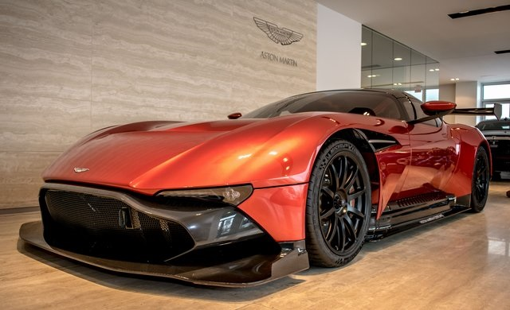

{kind=link}
İngiliz otomobil sektörünün en önde gelen markalarından biri olarak kabul edilen Aston Martin’in hikayesi, 1913 yılında Londra’da küçük bir atölyede başladı. Robert Bamford ve Lionel Martin tarafından, ‘Bamford ve Martin LTD’ adı altında kurulan şirket, ‘dönemin en teknolojik otomobili’ hedefiyle yola çıktı. O dönemde güçlü markalara karşı rekabet etmekte zorlanan Aston Martin, ilk ürettikleri otomobille büyük ilgi topladı. İlk otomobillerini 1914 yılında piyasaya süren ikili, tamamen el yapımı ürettikleri bu şaheserin üzerine son parçayı koyan kişinin adını yazdılar. O dönemden bu yana bu gelenek Aston Martin’de devam ediyor.
YARIŞLARIN EFENDİSİ
1920 yılına gelindiğinde ise, şirket merkezi Buckinghamshire’dan bir başka Birleşik Krallık şehri olan Kensington’a taşıdı. 1920 yılında gerçekleştirilen bu taşınma sonrasında şirket, iki yıl sonra Fransız Grand Prix’i için (dönemin en önemli otomobil yarışı) iki adet araç üretti. Markanın ilk yarışı olmasına rağmen ciddi bir başarı kazanan Aston Martin,adını dünyaya duyurmuş oldu. Bu başarının ardından kurumsal bir kimliğe bürünene Aston Martin, ağırlıklı yarış otomobilleri üretmeye başladı. Fransa’nın dünyaca ünlü ‘Le Mans 24 Saat’ yarışları için araba üretmeye başlayan marka, gösterdiği performans ile adını tarihe altın harflerle yazdırmayı başardı.
GELENEKLERE BAĞLI KALDI
Sonraki yıllarda Aston Martin spor otomobilleri başta Birleşik Krallık olmak üzere Amerika ve Avrupa yollarını arşınlamaya başladı. Yüzyılı aşkın bir geçmişi bulunan Aston Martin, bugün dünyada ihtişam, gösteriş ve gücün temsilcisi olarak kabul görüyor. Mühendislik tasarım ve dizayn anlamında otomobil dünyasında zirveye oturan İngiliz efsanesi, halen el işçiliği ile üretim yapıyor.
JAMES BOND’DAN ÇOK KONUŞULDU
Aston Martin’in otomobil dünyasında çığır atlamasındaki kuşkusuz en önemli olay; James Bond ile tanışması olmuştur. Dünya sinemasının efsanevi ajanı 007 James Bond, Goldfinger filminde ilk olarak 1965 model bir DB5 kullanmış ve filmde Bond’dan çok Aston Martin konuşulmuştur. 007, otomobilin üzerindeki silahlar ile düşmanlarına karşı savaş vermiştir. James Bond filmlerinde bugüne kadar tam 10 tane Aston Martin modeli kullanılmıştır. Bunların 5 tanesinde DB5 modeli, diğerlerinde ise DBS, VS Vantage Volante, V12 Vanguish ve DBS V12 görülüyor.
TÜRKİYE’DE BÜYÜK HAYRANLARI VAR
Bugün D&D Motorlu Araçlar çatısı altında Türkiye’de faaliyetlerine devam eden Aston Martin, Türk otomobil tutkunları tarafından da büyük ilgi görüyor. Ülkemizde 30’lu rakamları bulan satış adetleri, dünya pazarlarında örnek olarak gösteriliyor. D&D Motorlu Araçlar’ın satış grafiğinde yakaladığı başarı, Türkiye’yi Ortadoğu bölgesinde lider pozisyona yükseltti.
Aston Martin’in bir sanat eseri olduğunun kanıtı
- Aston Martin’de otomobile takılan son parçanın üzerine, bu parçayı takan işçinin imzası atılır.
- Aston Martin’in neredeyse tüm modellerinde ‘Altın Oran’ kullanılmıştır. Bunun için ünlü sanatçılar ile çalışılmaktadır. Tasarım ‘Aston Martin için her şeydir’ denebilir.
- Üretimde minimum plastik kullanılmaktadır. Bu otomobilin gücünü de simgelemektedir. Markanın İngiltere’deki reklamlarında bu özelliği ‘Kim salonunda plastik bir şeyler görmek ister ki’ sloganıyla yapılmıştır.
-Asto martin modellerinde halen el işçiliği kullanılmaktadır. Otomobilin koltuklarında kullanılan deri bile özel seçilmektedir.
- Yıllık 5 ila 6 bin adet arasında üretim yapan marka, otomasyondan ve fabrikasyondan uzak kalması ile otomobil tutkunlarının hayranlığını kazanmayı başarmıştır.
- Aston Martin modellerinin yüzde 90’ı halen piyasada aktif halde kullanılıyor. Bu da otomobilin ne kadar sağlam olduğunun bir kanıtı.
